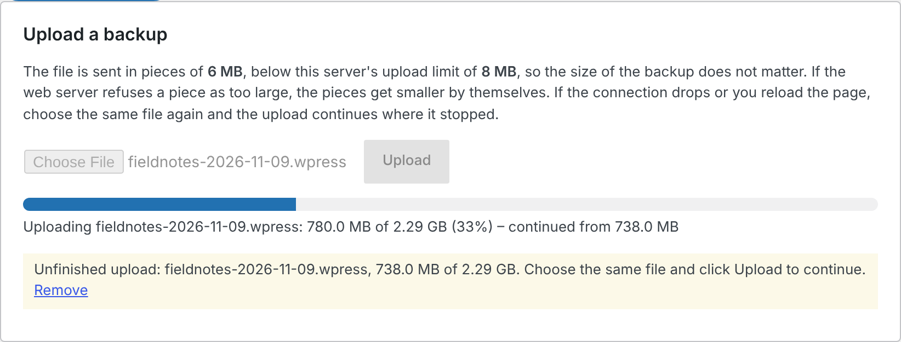

Restorwell quick start
Installing Restorwell and restoring your first .wpress backup. Each zip also has a readme.txt with the answers to common questions. Back to the Restorwell product page.
Install
Needs WordPress 6.5 or later and PHP 7.4 or later (64-bit for backups over 2 GB), on MySQL or MariaDB; password-protected backups need PHP's OpenSSL, bzip2 ones need bz2.
- Get restorwell.zip (version 1.2.3), free from this site. Pro buyers need only
restorwell-pro.zipfrom Polar (purchase e-mail or customer portal): it carries the free plugin. Do not unzip it. - In WordPress: Plugins > Add New Plugin > Upload Plugin, choose the zip, Install Now, Activate.
- Pro only, if the free plugin is missing: the notice "Restorwell Pro is not running yet" has Install and activate Restorwell, which installs the copy Pro carries (nothing is downloaded). If your host does not let WordPress install plugins, upload
restorwell.zipthe same way. - Open Tools > Restorwell (administrators only).
Restore a backup
- Choose the backup. Under Upload a backup, choose the .wpress file and click Upload. It goes in pieces smaller than your host's limit; after a drop or a reload, choose the same file again and it continues. Or copy it into
wp-content/restorwell-backupsby FTP and click Refresh list; files inwp-content/ai1wm-backupsare listed too. Each listed backup has Check and Delete. Choosing a file that is already on the server offers to check that copy instead of uploading it again.Swipe the picture sideways to read it.

The same file chosen again after a reload: it continues from 744.0 MB. - Read the Check. It starts by itself after an upload. It reads the whole backup, then shows what is inside and each limit on this server. Nothing on the site changes while it runs. For a password-protected backup, type the password and click Check password; it is used only while checking and restoring, and never saved. If this site has database tables that are not in the backup, the Check names them as a warning: they stay after the restore.
Swipe the picture sideways to read it.

A password-protected backup before the password is typed. Restore stays off. - Restore. When every limit is ticked, tick the confirmation and click Restore. Keep the page open; if it closes, reopen Tools > Restorwell to continue or cancel.
- Log in again with an account from the backup. On Apache, Restorwell writes WordPress's rewrite rules to
.htaccess; if the finished message says it could not, or a page other than the home page answers "not found", open Settings > Permalinks and click Save Changes. From WP-CLI, Restorwell writes the same rules when the backup came from an Apache site.
What the Check's messages mean
- Incomplete (the file ends early) or damaged (a checksum fails, and the file inside is named): copy the backup again; the Check's result offers to delete the bad copy.
- Password needed or wrong: type it again; it is case-sensitive.
- Not enough free disk space: free the space shown, then check again.
- Statement larger than
max_allowed_packet(the database's limit on one statement): ask your host to raise it to the size shown. - Tables not in the backup (a warning): they stay, with their data.
- Multisite, or a database that is not MySQL or MariaDB: not supported, and Restore stays off.
Command line (WP-CLI)
wp restorwell list wp restorwell check site.wpress --password-stdin wp restorwell restore site.wpress --password-stdin --yes wp restorwell fetch https://old-site.com/…/old-site.wpress (Pro)
A bare name is looked up in both backup folders; check changes nothing; Exit codes: 0 success, 1 other error, 2 password, 3 damaged or incomplete, 4 disk space, 5 another limit. fetch (Pro) downloads into the same folder; run it again after a drop and it continues; --porcelain prints only the file name; its codes are 0, 1, 4 and 6 (kept, run again).
Restorwell Pro: Restore from a link
With Pro active, Tools > Restorwell has Restore from a link. Paste the direct download address of a .wpress file and click Download to this server: the server downloads it with progress, then the same Check starts. After a dropped connection, or after you refresh or close the page, Continue picks up where it stopped. Share pages and private-network addresses are refused, with the reason under the field.
Old site still online? In All-in-One WP Migration > Backups, right-click Download on the backup and copy the link. What was tested, servers that cannot resume, and how Pro updates reach you (Polar's customer portal, then Upload Plugin and "Replace current with uploaded") are on the product page.
Limits
- It does not make backups, restore multisite networks or read other formats.
- If the host kills a request during the final switch, reopen Tools > Restorwell: Continue finishes the restore, Cancel puts the site's folders back.
- Left out by design: your site's settings file (
wp-config.php), drop-in files such asobject-cache.php(a cache plugin's hook into WordPress), caches (Elementor rewrites its CSS on the first visit); plugins, themes and tables not in the backup stay. E-mail addresses stored in settings (a contact form's sender, say) keep their old domain. - Not tested: Windows and macOS servers, LiteSpeed, IIS, MySQL, browsers other than Chromium.
Privacy
The free plugin makes no network request. Pro contacts only the address you type and its redirects. Neither sends anything to Ochrestack, and the backup password is never written anywhere.
Support
Email support@ochrestack.com with your WordPress and PHP versions and the lines marked ✕ (or the output of wp restorwell check <file>), plus any "Technical detail for your host" line.